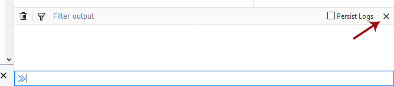
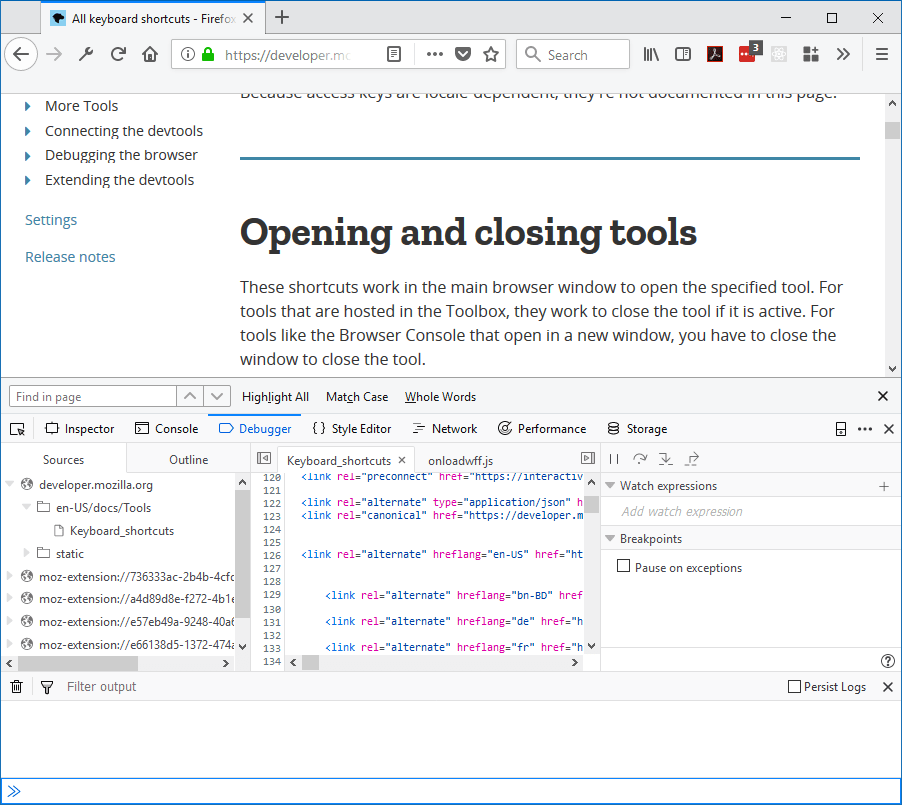
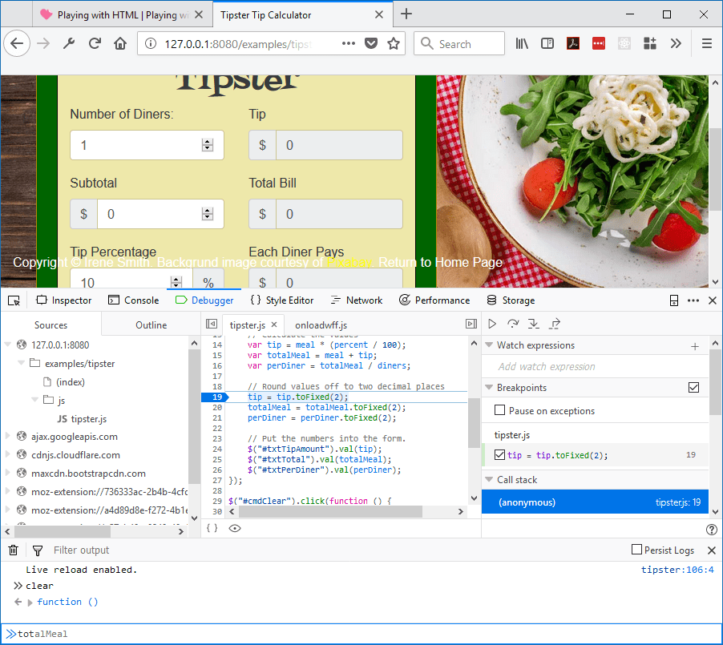

You can use the console alongside other tools. While you're in another tool in the Toolbox, just press Esc or select the "Show split console" command in the Toolbar menu. The toolbox will now appear split, with the original tool above and the web console underneath.
You can close the split console by pressing Esc again, or by selecting the "Hide split console" menu command.

{{EmbedYouTube("G2hyxhPHyXo")}}
As usual, $0 works as a shorthand for the element currently selected in the Inspector:
When you use the split console with the debugger, the console's scope is the currently executing stack frame. So if you hit a breakpoint in a function, the scope will be the function's scope. You'll get autocomplete for objects defined in the function, and can easily modify them on the fly:
